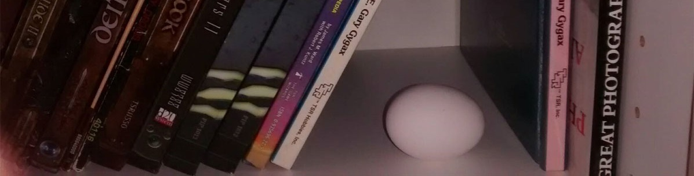

EGG RPG
Please note that this is an alpha playtest version of EGG RPG. Suggestions and criticism should be directed towards /r/EGGRPG on Reddit or @frogandcat_ on Twitter.
What is EGG RPG?
In 2130, archeologists conducting a dig in Russia accidentally released a strange flesh parasite into the world. The East Russian Infection quickly spread, which, as scientists explained, was due to the fact that it reproduced by eating. Despite global efforts to stop it, there was nothing that could be done about the spread of the parasite, and it quickly spread across Earth. Most of the world population died except for those who managed to get onto the final ships leaving the planet.
The people of Earth are succeeded by those who live on one of the three remaining Aurora-Class ships: Constellation, Horizon, and 天光 (Celestial Light). Research Facilities on Earth’s Moon and Saturn’s moon, Titan, act as military installations. The ships and colonies are ruled over by massive corporations, with populations in the billions.
As for planetary colonization, Mars was colonized by the corporation Protocom进化生物 in 2040, but they are very defensive of their colony due to fear of another ancient parasite being awakened. 天光 effectively serves as a defense satellite, orbiting Mars.
While the corporations are very hesitant to leave Sol out of fear of meeting a foe far more powerful than themselves, a rebel organization known as the New Haven Republic wish to gain control of an Aurora-Class ship in order to colonize new planets in a different star system.
This is the horrific, awful, terrible world of EGG RPG. People live under the control of corporations that only have the slightest concern about their well-being. While technology has improved the standard of living significantly, most of it is in its very early stages. Prosthetic limbs that outperform their flesh counterparts exist, but aren’t very aesthetically pleasing. Exposed wires and bulky battery packs keep many people cynical about the state of technological progress, with many feeling that the human race will never be as great as it could have if Earth were not lost.
At its core, EGG RPG is a Role-Playing Game that focuses on light, easy to pick up rules and a very open approach to mechanics, allowing players to quickly become immersed in the lore and begin playing.
Features
What to expect from the finished version
Download
Core Rulebook Character Sheet Combat Reference Sheet Weapon CardsFollow us on Twitter for updates!
Tabletop Simulator
In addition to the downloadable PDF form, EGG RPG is available for Tabletop Simulator on the official Tabletop Simulator Steam Workshop page!